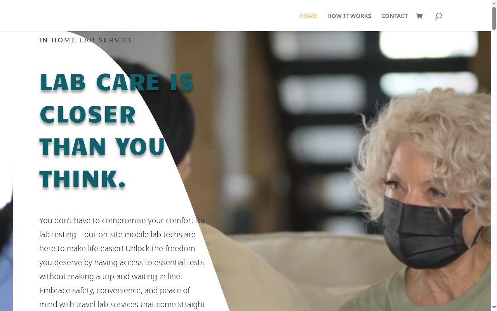
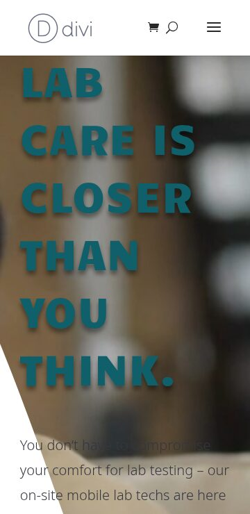

carelab.life سایتی که دکتر آزمایشگاه میپسندد
- تصویر
- یک عکس مستند و گرم از یک لحظه واقعی، تمامقد و با عمق میدان کم؛ یک برگه سفید با لبه منحنی بزرگ از کنار روی عکس آمده و متن را نگه داشته است.
- رنگ
- سبزآبی تیره در عنوان، طلایی ملایم فقط در منوی فعال؛ بقیه رنگ از خود عکس میآید: چوب، کرم و پوست.
- حروف و فضا
- عنوان بسیار درشت و فشرده با فضای سفید زیاد و تراکم کم؛ حس انسانی، خانگی و آرام. از آن ظاهرش را میگیریم، نه متن نمونهاش را.
#1A484E#FFC554#9D8975